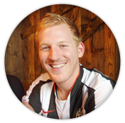
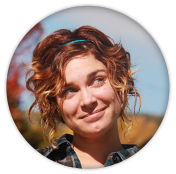

Mon petit frère et meilleur ami... Rencontre à sa naissance, coup de foudre avec ce petit roux. Une enfance fusionnelle à jouer au Lego et à Ken & Barbie. L’adolescence est un passage un plus tendu. Il m’obligeait à regarder Téléfoot le dimanche matin et les conflits étaient fréquents. Devenus adulte, nous devenons inséparables, il est mon confident, on se soutient, se conseille et on se protège...
Mon départ, une séparation qui a été très dure pour tous les deux mais aujourd’hui je suis heureuse car il comprend mon choix. Merci beaucoup Tom pour ton amour, ton humour et pour ton soutien au quotidien.
Une amie à travers les continents. Nous travaillions toutes les 2 chez Rueducommerce.com (rdc) dans le même département. Pendant quelques mois on se croisait. Ensuite arrivent les soirées rdc, les déjeuners ensemble et finalement une grande amitié est née. De nombreux souvenirs seront à jamais gravés dans ma mémoire: nos soirées et nos week-ends filles, nos restos en couple, votre venue à Montréal et toutes nos confessions de girls avec en prime les scoops parisiens!
Malgré les kilomètres qui nous séparent notre amitié est intacte et toujours aussi forte. Anne-so est une amie attentionnée, à l’écoute, de très bons conseils et dynamique. C’est aussi une femme avec un grand coeur, qui est toujours disponible! Merci ma belle pour ton amitié et ta présence au quotidien malgré la distance qui nous sépare.


Une amie et voisine Marseillaise à Montréal. Nous nous sommes rencontrées un soir enneigé de décembre 2010 à La Barraca, notre bar du coin! Je reviens, visa en poche, à Montréal en janvier 2011. Deux mois sans ma moitié, sans travail, j’apréhendais le temps long. Mais la tornade Cécile se charge de tout! Deux mois d’intégration intense avec un programme très chargé: soirées, sorties, brunch, apéro, activités sportives et culturelles, les we en châlet ou à NYC...
Que l’aventure continue toujours autant, c’est que du bonheur! Cécile est une amie très présente, investie, généreuse, dynamique et qui aime organiser. Elle a aussi une grande qualité : savoir déléguer, elle repète souvent : Bien manager c’est savoir déléguer!!! Merci ma Céc pour ta joie de vivre, ta motivation de tous les jours, et ton investissement.
Mon petit frère. Jacques a toujours été très proche de moi depuis notre plus tendre enfance. Il fut mon associé dans toutes les bêtises que j’ai pu commettre dans ma jeunesse et elles furent nombreuses !! Je l’ai emmené partout avec moi sans doute souvent contre son gré mais étant le grand frère je savais me montrer très persuasif.
Mais un jour la nature a décidé de se retourner contre moi et de favoriser le plus ‘petit’ et depuis je passe pour une crevette à côté de lui … Mon petit frère est une personne qui compte énormément dans ma vie et pour qui je serai prêt à faire n’importe quoi ! La distance qui nous sépare aujourd’hui n’affecte en rien tout l’amour que j’ai pour lui. Merci frangin d’être toujours à mon écoute et sache que je serai toujours là pour toi mon petit frère.
Un ami toujours présent. Ce gars-là, je le connais depuis le temps où l’on avait des coupes au bol, c’est vous dire si notre amitié est de longue date ! Romain a toujours été présent dans ma vie. On a commencé à se côtoyer sur les terrains de foot à l’âge de 10 ans et à partir de là une vraie relation d’amitié est née.
A ses côtés, j’ai usé mes semelles sur les pistes de danse, découvert les vacances entre amis, eu un nombre de fous rires incalculables … Les longues soirées dans La Grange à se chambrer, resteront à jamais gravés dans ma mémoire. Merci Romain pour tous les bons moments qu’on a passé ensemble. Qu’ils soient encore nombreux !!!!
Mon meilleur ami. Tout a réellement commencé quand ce jeune blondinet a débarqué dans ma classe de quatrième en plein milieu d’un cours ! Très vite nous sommes devenus inséparables. Nico fait partie de ces gens qui entrent dans votre vie et qui n’en sortent jamais. Il est devenu mon meilleur ami et malgré les années et la distance qui nous sépare je le considère toujours comme tel.
Comme il a été G.O. dans une autre vie, c’est tout naturellement que j’ai pensé à lui pour être mon témoin ! Merci Nico d’être ce que tu es ! Ne change rien …
 Voir la carte
Voir la carte